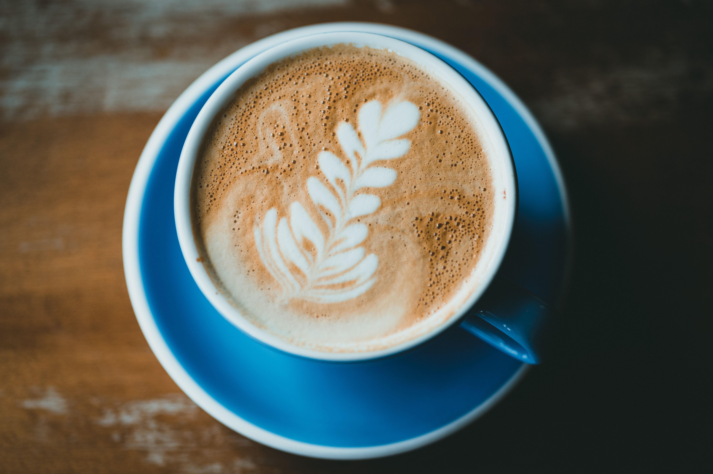
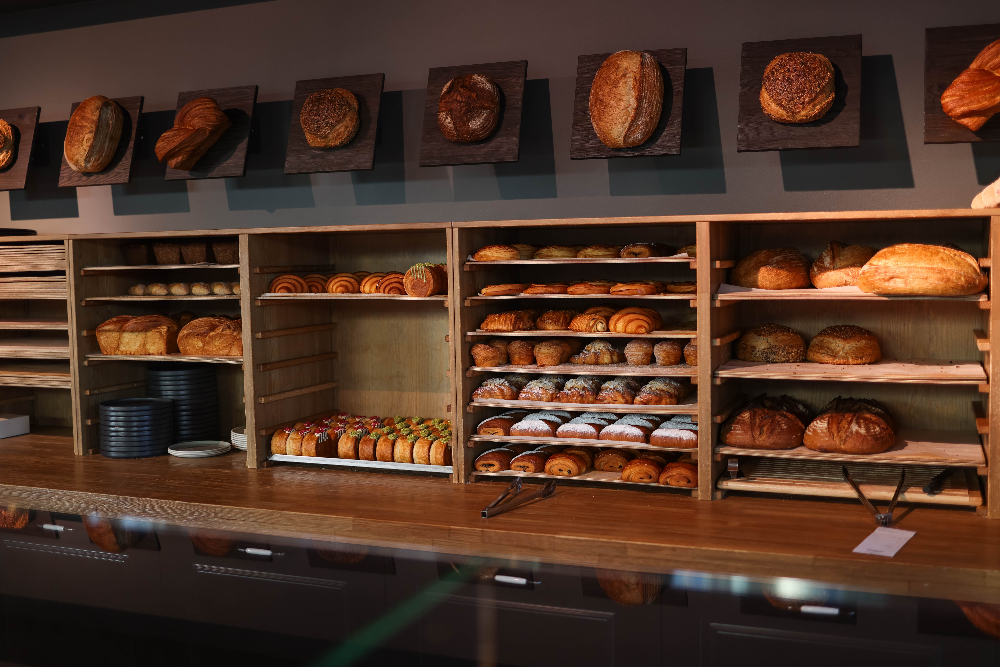
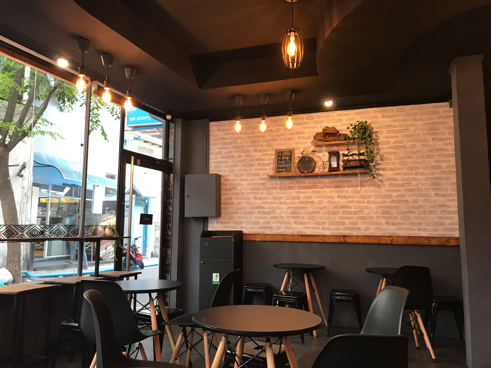

Café de verdade,
feito com carinho.
Um lugar pra desacelerar e saborear.
Um pouco da gente.
O Oak Coffee nasceu da vontade de criar um espaço onde o café é feito com atenção a cada detalhe. Grãos bem escolhidos, preparo cuidadoso e um ambiente pensado pra você desacelerar, nem que seja por alguns minutos.
Conheça nossa história completa.
Café artesanal
Grãos selecionados e torra cuidadosa, do jeito que um bom café merece.

Padaria Prórpria
Pães e doces feitos frescos todos os dias, direto do nosso forno.

Ambiente aconchegante
Um espaço pensado pra você ficar à vontade, sozinho ou acompanhado.
Horário de Funcionamento
- Segunda a sexta 07h às 20h
- Sábado 08h às 20h
- Domingo 08h às 14h